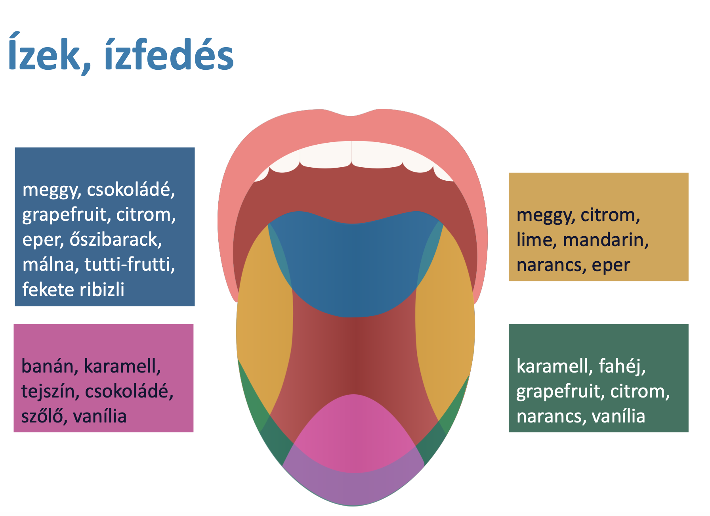

Szirupok
A szirup (sirupus) bevételre szánt nagy (50%-nál töményebb) koncentrációjú cukor vagy hexit oldat.
Szirup tulajdonságok:
- A szirupok édes ízű és viszkózus, vizet tartalmazó készítmények.
- Min. 45% m/m szacharózt tartalmaznak (Ph.Hg.).
- Többértékű alkoholok, mesterséges édesítőszerek.
- Aromaanyagokat, más ízesítőket is tartalmazhatnak.
- Térfogartra adagoljuk.
Szirup tulajdonságok:
☺ Ízfedés
☺ Sűrű, viszkózus → csökkenti a torok nyálkahártya irritációját
☺ Könnyen módosítható adag (pl. gyerekeknek)
☺ Öntartósító
